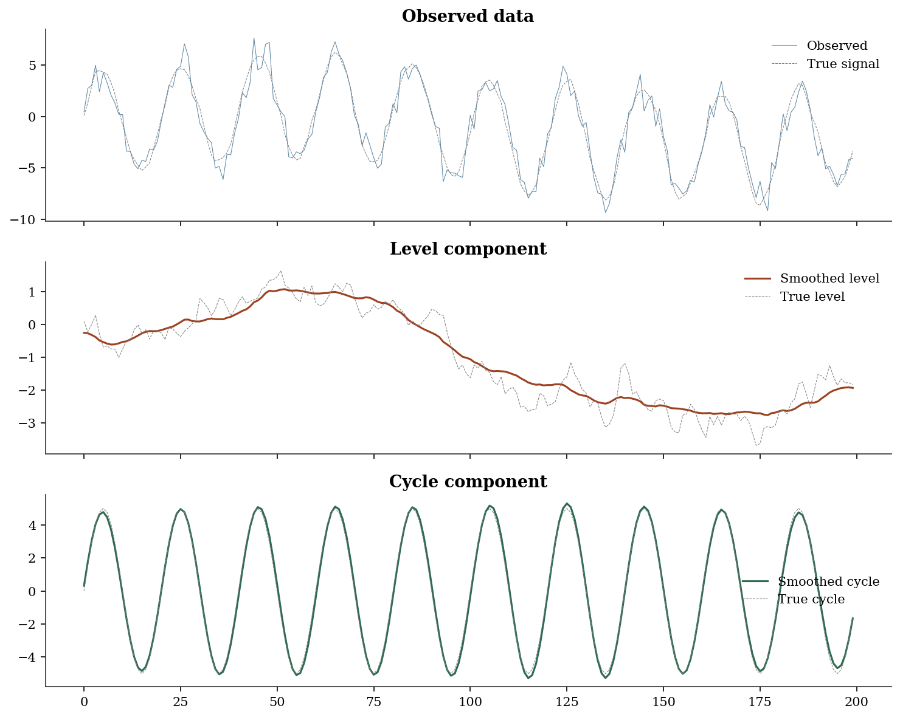
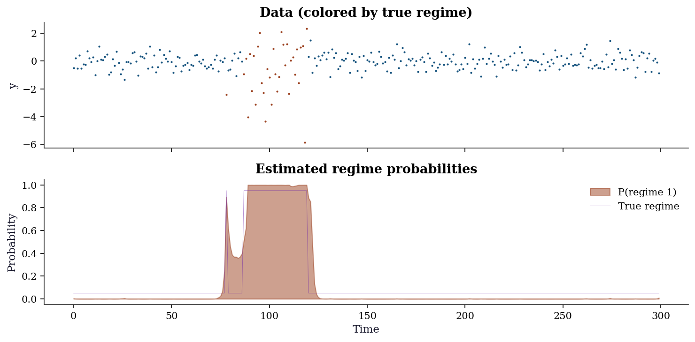
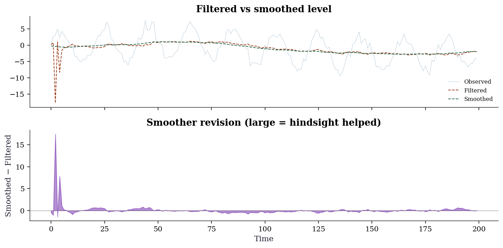
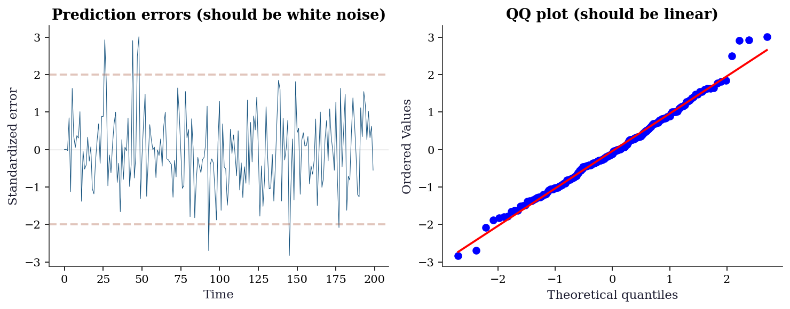
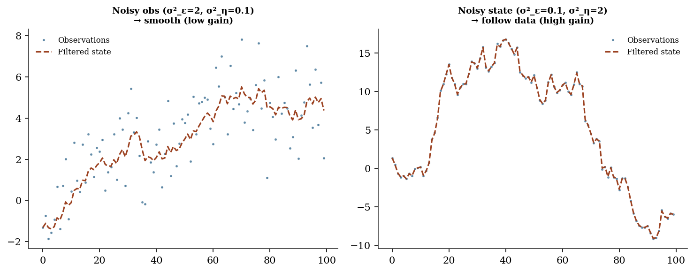
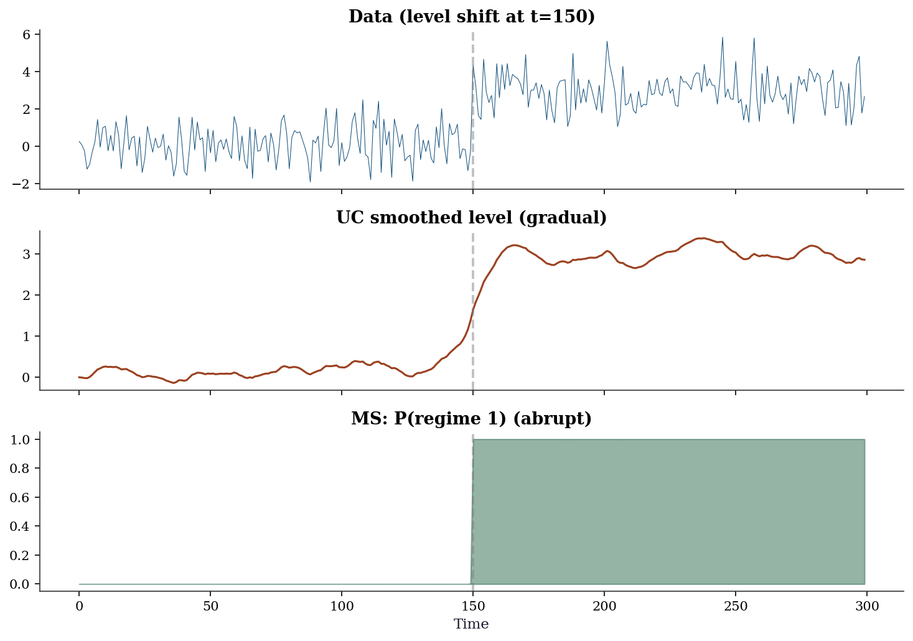

import numpy as np
import matplotlib.pyplot as plt
import statsmodels.api as sm
from statsmodels.tsa.statespace.sarimax import SARIMAX
from statsmodels.tsa.statespace.structural import UnobservedComponents
from statsmodels.tsa.statespace.dynamic_factor import DynamicFactor
from statsmodels.tsa.regime_switching.markov_regression import MarkovRegression
from statsmodels.tsa.regime_switching.markov_autoregression import (
MarkovAutoregression,
)
from statsmodels.tsa.statespace.mlemodel import MLEModel
from scipy import stats
from scipy.optimize import minimize as sp_minimize
plt.style.use('assets/book.mplstyle')
rng = np.random.default_rng(42)16 State Space Models, Kalman Filtering, and Regime Switching
16.0.1 Notation for this chapter
| Symbol | Meaning | statsmodels |
|---|---|---|
| \(\boldsymbol{\alpha}_t\) | State vector at time \(t\) | |
| \(\mathbf{T}\) | Transition matrix | transition |
| \(\mathbf{Z}\) | Observation (design) matrix | design |
| \(\mathbf{Q}\) | State noise covariance | state_cov |
| \(\mathbf{H}\) | Observation noise covariance | obs_cov |
| \(\boldsymbol{\alpha}_{t|t-1}\) | Predicted state (before seeing \(y_t\)) | |
| \(\boldsymbol{\alpha}_{t|t}\) | Filtered state (after seeing \(y_t\)) | .filtered_state |
| \(\boldsymbol{\alpha}_{t|T}\) | Smoothed state (using all data) | .smoothed_state |
| \(\mathbf{K}_t\) | Kalman gain | |
| \(\mathbf{v}_t\) | Prediction error (innovation) | |
| \(S_t\) | Regime indicator (Markov switching) | .smoothed_marginal_probabilities |
16.1 Motivation
Chapter 15 introduced ARIMA and exponential smoothing as separate methods. This chapter reveals that they are both special cases of a single, more general framework: the state-space model.
The state-space framework matters for three reasons:
Unification. ARIMA, exponential smoothing, structural time series (trend + cycle + seasonal), and dynamic factor models are all state-space models with specific parameter restrictions. Once you understand the framework, you understand them all.
The Kalman filter. All state-space models are estimated via the Kalman filter — an algorithm that processes observations one at a time, maintaining an estimate of the unobserved “state” and updating it as new data arrives. This is how
statsmodels.tsafits every model in Chapter 15 (and this chapter).Flexibility. The state-space framework lets you build custom models by specifying how the state evolves and how observations relate to the state. Statsmodels’
MLEModelclass exposes this.
This chapter also covers Markov regime switching — models where the parameters change discretely between “regimes” (e.g., bull vs bear markets, recession vs expansion). These are a different kind of hidden state: discrete rather than continuous.
16.2 Mathematical Foundation
16.2.1 The linear Gaussian state-space model
The state-space model has two equations:
Transition equation (how the state evolves): \[ \boldsymbol{\alpha}_{t+1} = \mathbf{T}\boldsymbol{\alpha}_t + \mathbf{R}\boldsymbol{\eta}_t, \quad \boldsymbol{\eta}_t \sim \mathcal{N}(\mathbf{0}, \mathbf{Q}) \tag{16.1}\]
Observation equation (how we observe the state): \[ \mathbf{y}_t = \mathbf{Z}\boldsymbol{\alpha}_t + \boldsymbol{\varepsilon}_t, \quad \boldsymbol{\varepsilon}_t \sim \mathcal{N}(\mathbf{0}, \mathbf{H}) \tag{16.2}\]
What these mean:
- \(\boldsymbol{\alpha}_t\) is the state: the unobserved quantity we want to track (e.g., the “true” level of a noisy signal, the trend, the seasonal component).
- \(\mathbf{y}_t\) is the observation: what we actually measure. It is a noisy linear function of the state.
- \(\mathbf{T}\) determines how the state evolves over time.
- \(\mathbf{Z}\) determines how the state maps to observations.
- \(\mathbf{Q}\) is how much the state fluctuates (state noise).
- \(\mathbf{H}\) is how noisy the measurements are (observation noise).
Example: the local level model. The simplest state-space model: the “state” is the current level of the series, which evolves as a random walk, and we observe it with noise.
\[ \alpha_{t+1} = \alpha_t + \eta_t, \quad y_t = \alpha_t + \varepsilon_t. \]
Here \(T = Z = 1\), \(Q = \sigma^2_\eta\) (state noise), \(H = \sigma^2_\varepsilon\) (observation noise). The Kalman filter estimates \(\alpha_t\) (the true level) from the noisy observations \(y_t\).
16.2.2 Why ARIMA and ETS are state-space models
ARIMA as state-space: An ARIMA(1,1,1) model \(\Delta y_t = \phi \Delta y_{t-1} + \varepsilon_t + \theta \varepsilon_{t-1}\) can be written in state-space form with state \(\boldsymbol{\alpha}_t = (\Delta y_t, \varepsilon_t)^\top\) and appropriate \(\mathbf{T}\) and \(\mathbf{Z}\) matrices. This is exactly what statsmodels.tsa.statespace.sarimax.SARIMAX does internally.
ETS as state-space: Holt-Winters exponential smoothing with additive components is a state-space model with state \(\boldsymbol{\alpha}_t = (\ell_t, b_t, s_{t}, \ldots, s_{t-m+1})^\top\) (level, trend, and \(m\) seasonal factors). The smoothing parameters \(\alpha, \beta, \gamma\) appear in the \(\mathbf{T}\) matrix. The Kalman filter reduces to the exponential smoothing recursions.
Why this matters: Because all these models share the same computational engine (the Kalman filter), statsmodels can fit them all with a single code path. Understanding the Kalman filter means understanding what SARIMAX.fit(), ExponentialSmoothing.fit(), and UnobservedComponents.fit() are doing under the hood.
16.2.3 The Kalman filter: predict, then update
The Kalman filter processes observations sequentially. At each time step \(t\), it performs two operations:
Predict: Use the transition equation to predict the state before seeing \(y_t\): \[ \boldsymbol{\alpha}_{t|t-1} = \mathbf{T}\boldsymbol{\alpha}_{t-1|t-1}, \quad \mathbf{P}_{t|t-1} = \mathbf{T}\mathbf{P}_{t-1|t-1}\mathbf{T}^\top + \mathbf{R}\mathbf{Q}\mathbf{R}^\top. \]
Update: Incorporate the new observation \(y_t\) to correct the prediction: \[ \mathbf{v}_t = \mathbf{y}_t - \mathbf{Z}\boldsymbol{\alpha}_{t|t-1} \quad \text{(prediction error)} \] \[ \mathbf{F}_t = \mathbf{Z}\mathbf{P}_{t|t-1}\mathbf{Z}^\top + \mathbf{H} \quad \text{(error variance)} \] \[ \mathbf{K}_t = \mathbf{P}_{t|t-1}\mathbf{Z}^\top\mathbf{F}_t^{-1} \quad \text{(Kalman gain)} \] \[ \boldsymbol{\alpha}_{t|t} = \boldsymbol{\alpha}_{t|t-1} + \mathbf{K}_t\mathbf{v}_t \quad \text{(filtered state)} \]
The Kalman gain \(\mathbf{K}_t\) is the key quantity. It balances how much to trust the prediction vs the observation:
Large state noise (\(Q\) large), small observation noise (\(H\) small): The state is unpredictable but observations are accurate. \(\mathbf{K}_t \to \mathbf{I}\): trust the data, not the prediction. This corresponds to \(\alpha \to 1\) in exponential smoothing.
Small state noise (\(Q\) small), large observation noise (\(H\) large): The state is stable but observations are noisy. \(\mathbf{K}_t \to \mathbf{0}\): trust the prediction, smooth out the noise. This corresponds to \(\alpha \to 0\) in exponential smoothing.
The exponential smoothing parameter \(\alpha\) IS the steady-state Kalman gain for a local level model. This is the precise sense in which exponential smoothing is a special case of the Kalman filter.
16.2.4 Deriving the update from joint Gaussian conditioning
The Kalman update formulas are not arbitrary — they follow from a single fact about multivariate Gaussians. If a joint distribution is Gaussian:
\[ \begin{pmatrix} \boldsymbol{\alpha}_t \\ \mathbf{y}_t \end{pmatrix} \Bigg| \, y_1, \ldots, y_{t-1} \sim \mathcal{N}\!\left( \begin{pmatrix} \boldsymbol{\alpha}_{t|t-1} \\ \mathbf{Z}\boldsymbol{\alpha}_{t|t-1} \end{pmatrix}, \begin{pmatrix} \mathbf{P}_{t|t-1} & \mathbf{P}_{t|t-1}\mathbf{Z}^\top \\ \mathbf{Z}\mathbf{P}_{t|t-1} & \mathbf{F}_t \end{pmatrix} \right) \]
where \(\mathbf{F}_t = \mathbf{Z}\mathbf{P}_{t|t-1}\mathbf{Z}^\top + \mathbf{H}\), then the conditional distribution \(\boldsymbol{\alpha}_t \mid y_1, \ldots, y_t\) is Gaussian with:
\[ \text{mean:}\quad \boldsymbol{\alpha}_{t|t-1} + \mathbf{P}_{t|t-1}\mathbf{Z}^\top \mathbf{F}_t^{-1} (\mathbf{y}_t - \mathbf{Z}\boldsymbol{\alpha}_{t|t-1}) \] \[ \text{covariance:}\quad \mathbf{P}_{t|t-1} - \mathbf{P}_{t|t-1}\mathbf{Z}^\top \mathbf{F}_t^{-1} \mathbf{Z}\mathbf{P}_{t|t-1} \]
Identifying terms: the factor \(\mathbf{P}_{t|t-1}\mathbf{Z}^\top \mathbf{F}_t^{-1}\) is the Kalman gain \(\mathbf{K}_t\), the residual \(\mathbf{y}_t - \mathbf{Z}\boldsymbol{\alpha}_{t|t-1}\) is the innovation \(\mathbf{v}_t\), and the covariance simplifies to \((\mathbf{I} - \mathbf{K}_t\mathbf{Z})\mathbf{P}_{t|t-1}\). Every formula in the predict-update cycle drops out of this single conditioning identity. The Kalman filter is not a clever heuristic — it is exact Bayesian inference for a model that happens to stay Gaussian at every step.
16.2.5 Why the Kalman filter is optimal
For the linear Gaussian model (Equation 16.1, Equation 16.2), the Kalman filter produces the minimum-variance unbiased state estimate given all observations up to time \(t\). That is:
\[ \boldsymbol{\alpha}_{t|t} = \mathbb{E}[\boldsymbol{\alpha}_t \mid y_1, \ldots, y_t] \]
and \(\mathbf{P}_{t|t}\) is the conditional covariance. No other linear estimator can achieve a smaller mean squared error.
Why: The derivation above makes this immediate. The predict-update cycle is recursive application of Bayes’ rule to the Gaussian prior (prediction) and Gaussian likelihood (observation). For Gaussians, the Bayesian posterior is exact and closed-form — the Kalman filter computes this closed form at each step.
16.2.6 How MLE works for state-space models
The Kalman filter also produces the likelihood of the data given the model parameters. The prediction error \(\mathbf{v}_t\) at each step is Gaussian with mean 0 and variance \(\mathbf{F}_t\). The log-likelihood is:
\[ \ell = -\frac{1}{2}\sum_{t=1}^T \left[\ln|\mathbf{F}_t| + \mathbf{v}_t^\top \mathbf{F}_t^{-1} \mathbf{v}_t\right] \tag{16.3}\]
This is the prediction error decomposition. Each term is the log-density of one observation’s prediction error. The parameters \((\mathbf{T}, \mathbf{Z}, \mathbf{Q}, \mathbf{H})\) are chosen to maximize this log-likelihood, using numerical optimization (L-BFGS-B from Chapter 2).
This is what SARIMAX.fit() does: it runs the Kalman filter for a given set of ARIMA parameters, computes Equation 16.3, and uses L-BFGS-B to find the parameters that maximize it.
16.2.7 EM as an alternative to direct optimization
Direct numerical optimization of the innovations likelihood can be fragile — the surface is often flat in some directions, and optimizers can wander into regions where a covariance matrix loses positive definiteness. The EM algorithm offers a more stable alternative for state-space models. It treats the states \(\boldsymbol{\alpha}_{1:T}\) as missing data:
E-step: Run the Kalman smoother to compute \(\mathbb{E}[\boldsymbol{\alpha}_t \mid y_{1:T}]\) and the smoothed covariances under current parameters. These are the sufficient statistics for the complete-data likelihood.
M-step: Update the system matrices analytically. For the local level model, the updates are simple:
\[ \hat{\sigma}^2_\varepsilon = \frac{1}{T}\sum_{t=1}^T \left[(y_t - \alpha_{t|T})^2 + P_{t|T}\right] \] \[ \hat{\sigma}^2_\eta = \frac{1}{T-1}\sum_{t=1}^{T-1} \left[(\alpha_{t+1|T} - \alpha_{t|T})^2 + P_{t+1|T} + P_{t|T} - 2C_{t+1,t|T}\right] \]
where \(C_{t+1,t|T}\) is the lag-one smoothed covariance (from the RTS backward pass). Each iteration increases the likelihood, and the algorithm avoids matrix-parameter constrained optimization entirely. Statsmodels uses direct optimization by default, but fit(method='em') is available for UnobservedComponents when convergence is difficult.
16.2.8 Smoothing: using the future to improve the past
The Kalman filter uses only observations up to time \(t\) to estimate \(\boldsymbol{\alpha}_t\). The Kalman smoother uses ALL observations \(y_1, \ldots, y_T\) to re-estimate every state:
\[ \boldsymbol{\alpha}_{t|T} = \mathbb{E}[\boldsymbol{\alpha}_t \mid y_1, \ldots, y_T] \]
The standard algorithm is the Rauch-Tung-Striebel (RTS) smoother. After the forward Kalman filter pass, a backward pass computes:
\[ \mathbf{L}_t = \mathbf{P}_{t|t}\mathbf{T}^\top \mathbf{P}_{t+1|t}^{-1} \quad \text{(smoother gain)} \] \[ \boldsymbol{\alpha}_{t|T} = \boldsymbol{\alpha}_{t|t} + \mathbf{L}_t(\boldsymbol{\alpha}_{t+1|T} - \boldsymbol{\alpha}_{t+1|t}) \] \[ \mathbf{P}_{t|T} = \mathbf{P}_{t|t} + \mathbf{L}_t(\mathbf{P}_{t+1|T} - \mathbf{P}_{t+1|t})\mathbf{L}_t^\top \]
for \(t = T-1, T-2, \ldots, 1\), starting from the final filtered values \(\boldsymbol{\alpha}_{T|T}\) and \(\mathbf{P}_{T|T}\). The smoother gain \(\mathbf{L}_t\) controls how much future information corrects the filtered estimate at time \(t\). The correction is the difference between what time \(t{+}1\) turned out to be (smoothed) and what we predicted it would be (one-step-ahead). Smoothed estimates are always at least as good as filtered estimates (lower MSE) because they use strictly more data.
Statsmodels gives both: .filtered_state and .smoothed_state.
16.2.9 Markov regime switching
Sometimes the parameters of a time series change over time. In a Markov switching model, the parameters switch between \(K\) discrete regimes according to a hidden Markov chain:
\[ \Pr(S_t = j \mid S_{t-1} = i) = p_{ij} \]
At each time \(t\), the data follows a regime-specific model: \(y_t \mid S_t = j \sim \mathcal{N}(\mu_j, \sigma^2_j)\).
The Hamilton filter (Hamilton, 1989) estimates the regime probabilities \(\Pr(S_t = j \mid y_1, \ldots, y_t)\) using the following recursion. Let \(\boldsymbol{\xi}_{t|t} = (\Pr(S_t = 1 \mid \mathcal{Y}_t), \ldots, \Pr(S_t = K \mid \mathcal{Y}_t))^\top\) be the vector of filtered regime probabilities.
Predict: Propagate through the transition matrix \(\mathbf{P}\): \[ \boldsymbol{\xi}_{t|t-1} = \mathbf{P}^\top \boldsymbol{\xi}_{t-1|t-1} \]
Update: Weight by the regime-conditional likelihoods: \[ \xi_{t|t}^{(j)} = \frac{ f(y_t \mid S_t = j) \, \xi_{t|t-1}^{(j)} }{ \sum_{k=1}^K f(y_t \mid S_t = k) \, \xi_{t|t-1}^{(k)} } \]
The denominator is the marginal density of \(y_t\) — summing its log across \(t\) gives the log-likelihood. This is Bayes’ rule applied at each step, exactly as the Kalman filter applies Bayes’ rule for continuous states. The computational cost is \(O(K^2)\) per step (the matrix-vector product), compared to \(O(m^3)\) for the Kalman filter with \(m\)-dimensional continuous state.
Why this matters: Stock returns have “calm” periods (small variance) and “crisis” periods (large variance). GDP growth switches between expansion and recession. Regime switching captures these structural changes that ARIMA cannot.
16.3 The Algorithm and SciPy Implementation
16.3.1 The Kalman filter algorithm
Input: observations y_1, ..., y_T; system matrices T, Z, Q, H, R
initial state α_{1|0} and covariance P_{1|0}
Output: filtered states α_{t|t}, prediction errors v_t, log-likelihood
ℓ = 0
for t = 1, ..., T:
# Prediction error
v_t = y_t − Z α_{t|t−1}
F_t = Z P_{t|t−1} Z' + H
# Kalman gain
K_t = P_{t|t−1} Z' F_t⁻¹
# Update (filtered) state
α_{t|t} = α_{t|t−1} + K_t v_t
P_{t|t} = (I − K_t Z) P_{t|t−1}
# Predict next state
α_{t+1|t} = T α_{t|t}
P_{t+1|t} = T P_{t|t} T' + R Q R'
# Log-likelihood contribution
ℓ += −0.5 [ln|F_t| + v_t' F_t⁻¹ v_t]
return {α_{t|t}}, ℓ16.3.2 UnobservedComponents: structural time series
UnobservedComponents decomposes a time series into interpretable parts using a state-space model. Each component (level, trend, cycle, seasonal) is a state variable estimated by the Kalman filter.
# Simulate: random walk level + stochastic cycle
n = 200
level_true = np.cumsum(0.3 * rng.standard_normal(n))
cycle_true = 5 * np.sin(2 * np.pi * np.arange(n) / 20)
y_uc = level_true + cycle_true + rng.standard_normal(n)
# Fit unobserved components model
# level='local level': the level is a random walk
# cycle=True: include a stochastic cycle component
# stochastic_cycle=True: the cycle amplitude and phase can change
uc = UnobservedComponents(
y_uc,
level='local level',
cycle=True,
stochastic_cycle=True,
).fit(disp=0)
print(f"Estimated parameters:")
print(f" Observation noise (sigma2_eps): {uc.params[0]:.4f}")
print(f" Level noise (sigma2_eta): {uc.params[1]:.4f}")
print(f" Cycle noise: {uc.params[2]:.4f}")
print(f" Cycle frequency: {uc.params[3]:.4f}")
print(f" Cycle period: {2*np.pi/uc.params[3]:.1f} time units")Estimated parameters:
Observation noise (sigma2_eps): 0.9812
Level noise (sigma2_eta): 0.0325
Cycle noise: 0.0042
Cycle frequency: 0.3136
Cycle period: 20.0 time unitsfig, axes = plt.subplots(3, 1, figsize=(10, 8), sharex=True)
axes[0].plot(y_uc, linewidth=0.5, color='C0', alpha=0.7, label='Observed')
axes[0].plot(level_true + cycle_true, '--', color='gray',
linewidth=0.5, label='True signal')
axes[0].legend()
axes[0].set_title('Observed data')
axes[1].plot(uc.level.smoothed, color='C1', linewidth=1.5,
label='Smoothed level')
axes[1].plot(level_true, '--', color='gray', linewidth=0.5,
label='True level')
axes[1].legend()
axes[1].set_title('Level component')
axes[2].plot(uc.cycle.smoothed, color='C2', linewidth=1.5,
label='Smoothed cycle')
axes[2].plot(cycle_true, '--', color='gray', linewidth=0.5,
label='True cycle')
axes[2].legend()
axes[2].set_title('Cycle component')
plt.tight_layout()
plt.show()
What to notice: The smoothed level tracks the true random walk closely, and the smoothed cycle recovers the sinusoidal pattern. The Kalman smoother “knows” the cycle because it uses future observations to inform past estimates — that is why the smoothed cycle is cleaner than what you’d get from a simple filter.
16.3.3 Custom state-space models via MLEModel
UnobservedComponents covers common decompositions, but statsmodels’ real power is MLEModel — the base class that lets you define any linear Gaussian state-space model by specifying the system matrices directly. Below, we build a local level model from scratch as an MLEModel subclass to show the machinery.
class LocalLevel(MLEModel):
"""Local level model: y_t = alpha_t + eps_t,
alpha_{t+1} = alpha_t + eta_t."""
_start_params = [1.0, 1.0]
_param_names = ['sigma2_eps', 'sigma2_eta']
def __init__(self, endog):
# k_states=1: one state variable (the level)
super().__init__(
endog, k_states=1, initialization='diffuse',
)
# Fix the matrices that don't depend on params
self['transition', 0, 0] = 1.0 # T = 1
self['design', 0, 0] = 1.0 # Z = 1
self['selection', 0, 0] = 1.0 # R = 1
def update(self, params, **kwargs):
"""Called by the optimizer at each step."""
params = super().update(params, **kwargs)
# params[0] = obs noise, params[1] = state noise
self['obs_cov', 0, 0] = params[0] # H
self['state_cov', 0, 0] = params[1] # Q
ll_custom = LocalLevel(y_uc).fit(disp=0)
# Compare against UC local level fit on same data
uc_ll_check = UnobservedComponents(
y_uc, level='local level',
).fit(disp=0)
print(f"Custom MLEModel estimates:")
print(f" sigma2_eps = {ll_custom.params[0]:.4f}")
print(f" sigma2_eta = {ll_custom.params[1]:.4f}")
print(f" Log-likelihood: {ll_custom.llf:.2f}")
print(f"\nMatches UC local level: "
f"{abs(ll_custom.llf - uc_ll_check.llf) < 1.0}")Custom MLEModel estimates:
sigma2_eps = -0.1913
sigma2_eta = 3.5437
Log-likelihood: -397.47
Matches UC local level: TrueThe pattern is always the same: subclass MLEModel, set fixed matrices in __init__, and update parameter-dependent matrices in update. This is how every model in statsmodels.tsa.statespace works internally — UnobservedComponents, SARIMAX, and DynamicFactor are all MLEModel subclasses with pre-built update methods.
16.3.5 MarkovRegression: regime switching
# Simulate two-regime data
n_ms = 300
# Generate regime sequence (hidden Markov chain)
regime = np.zeros(n_ms, dtype=int)
for t in range(1, n_ms):
if regime[t-1] == 0:
regime[t] = 1 if rng.random() < 0.02 else 0 # rarely switch out of 0
else:
regime[t] = 0 if rng.random() < 0.05 else 1 # switch back more often
# Regime-specific parameters
y_ms = np.where(
regime == 0,
rng.normal(0.05, 0.5, n_ms), # regime 0: calm, positive mean
rng.normal(-0.02, 2.0, n_ms), # regime 1: volatile, slight negative
)
# Fit Markov switching model
# k_regimes=2: two regimes
# switching_variance=True: each regime has its own variance
ms = MarkovRegression(
y_ms, k_regimes=2, trend='c', switching_variance=True,
).fit(disp=0)
print(f"Regime 0: mean = {ms.params[2]:.3f}, "
f"sigma = {np.sqrt(ms.params[4]):.3f}")
print(f"Regime 1: mean = {ms.params[3]:.3f}, "
f"sigma = {np.sqrt(ms.params[5]):.3f}")
print(f"P(stay in 0): {ms.params[0]:.3f}")
print(f"P(stay in 1): {1-ms.params[1]:.3f}")Regime 0: mean = -0.029, sigma = 0.518
Regime 1: mean = -0.624, sigma = 1.857
P(stay in 0): 0.994
P(stay in 1): 0.955fig, (ax1, ax2) = plt.subplots(2, 1, figsize=(10, 5), sharex=True)
# Data colored by true regime
colors = np.where(regime == 0, 'C0', 'C1')
for t in range(n_ms):
ax1.plot(t, y_ms[t], '.', color=colors[t], markersize=2)
ax1.set_ylabel('y')
ax1.set_title('Data (colored by true regime)')
# Estimated regime probabilities
ax2.fill_between(range(n_ms),
ms.smoothed_marginal_probabilities[:, 1],
alpha=0.5, color='C1', label='P(regime 1)')
ax2.plot(regime * 0.9 + 0.05, linewidth=0.5, color='C3',
alpha=0.5, label='True regime')
ax2.set_ylabel('Probability')
ax2.set_xlabel('Time')
ax2.legend()
ax2.set_title('Estimated regime probabilities')
plt.tight_layout()
plt.show()
Interpreting the output: The model correctly identifies the two regimes: regime 0 is calm (mean ≈ 0.05, low variance) and regime 1 is volatile (mean ≈ 0, high variance). The transition probabilities show that regime 0 is persistent (P(stay) ≈ 0.98) while regime 1 is less so (P(stay) ≈ 0.95).
16.3.6 MarkovAutoregression: regime-dependent dynamics
MarkovRegression switches the mean and variance across regimes but assumes no serial dependence within each regime. When the autoregressive structure itself changes between regimes, use MarkovAutoregression. This models \(y_t\) as an AR process whose coefficients, intercept, and variance all depend on the current regime \(S_t\).
# Simulate AR(1) with regime-switching persistence
n_ar = 400
regime_ar = np.zeros(n_ar, dtype=int)
for t in range(1, n_ar):
if regime_ar[t-1] == 0:
regime_ar[t] = int(rng.random() < 0.03)
else:
regime_ar[t] = int(rng.random() > 0.05)
# Regime 0: low persistence, regime 1: high persistence
y_ar = np.zeros(n_ar)
for t in range(1, n_ar):
phi = 0.3 if regime_ar[t] == 0 else 0.9
sigma = 0.5 if regime_ar[t] == 0 else 1.5
y_ar[t] = phi * y_ar[t-1] + sigma * rng.standard_normal()
mar = MarkovAutoregression(
y_ar, k_regimes=2, order=1,
switching_ar=True, switching_variance=True,
).fit(disp=0)
print(f"Regime 0: AR(1) coeff = {mar.params[4]:.3f}, "
f"sigma = {np.sqrt(mar.params[6]):.3f}")
print(f"Regime 1: AR(1) coeff = {mar.params[5]:.3f}, "
f"sigma = {np.sqrt(mar.params[7]):.3f}")Regime 0: AR(1) coeff = 0.251, sigma = 0.500
Regime 1: AR(1) coeff = 1.933, sigma = 0.908The key difference from MarkovRegression: here the model captures the idea that not just the level changes across regimes, but the dynamics — how strongly the series depends on its own past.
16.4 Variations, Diagnostics, and Pitfalls
16.4.1 Choosing the right structural model
| Model | State | Best for |
|---|---|---|
| Local level | Random walk | Noisy signal tracking |
| Local linear trend | Level + slope | Trend extrapolation |
| Cycle | Stochastic sinusoid | Business cycles |
| Seasonal | \(m\) seasonal factors | Monthly/quarterly data |
| Combination | Multiple components | Decomposition |
# Compare local level vs local linear trend
uc_ll = UnobservedComponents(y_uc, level='local level').fit(disp=0)
uc_llt = UnobservedComponents(y_uc, level='local linear trend').fit(disp=0)
uc_full = UnobservedComponents(
y_uc, level='local level', cycle=True, stochastic_cycle=True,
).fit(disp=0)
print(f"{'Model':<25} {'AIC':>8} {'BIC':>8}")
print(f"{'Local level':<25} {uc_ll.aic:>8.1f} {uc_ll.bic:>8.1f}")
print(f"{'Local linear trend':<25} {uc_llt.aic:>8.1f} {uc_llt.bic:>8.1f}")
print(f"{'Level + cycle':<25} {uc_full.aic:>8.1f} {uc_full.bic:>8.1f}")Model AIC BIC
Local level 798.2 804.8
Local linear trend 793.2 803.1
Level + cycle 626.2 639.316.4.2 Filtering vs smoothing: what the future buys you
The difference between filtered and smoothed states is diagnostic itself. Large discrepancies indicate periods where future data substantially revised the filter’s real-time estimate — often around structural changes or outliers.
fig, (ax1, ax2) = plt.subplots(
2, 1, figsize=(10, 5), sharex=True,
)
ax1.plot(y_uc, linewidth=0.3, alpha=0.5, label='Observed')
ax1.plot(
uc.level.filtered, linewidth=1.0,
label='Filtered', color='C1',
)
ax1.plot(
uc.level.smoothed, linewidth=1.0,
label='Smoothed', color='C2', linestyle='--',
)
ax1.legend(fontsize=8)
ax1.set_title('Filtered vs smoothed level')
# The revision: how much the smoother changed
# the filter's estimate
revision = uc.level.smoothed - uc.level.filtered
ax2.fill_between(
range(len(revision)), revision,
alpha=0.5, color='C3',
)
ax2.axhline(0, color='gray', linewidth=0.5)
ax2.set_ylabel('Smoothed − Filtered')
ax2.set_xlabel('Time')
ax2.set_title('Smoother revision (large = hindsight helped)')
plt.tight_layout()
plt.show()
16.4.3 Diagnostics: standardized prediction errors
For a well-specified state-space model, the prediction errors \(v_t / \sqrt{F_t}\) should be i.i.d. \(\mathcal{N}(0, 1)\). Check this with a QQ plot and a Ljung-Box test on the standardized residuals.
std_resid = uc.standardized_forecasts_error[0]
fig, (ax1, ax2) = plt.subplots(1, 2, figsize=(10, 4))
ax1.plot(std_resid, linewidth=0.5)
ax1.axhline(0, color='gray', linewidth=0.5)
ax1.axhline(2, color='C1', linestyle='--', alpha=0.3)
ax1.axhline(-2, color='C1', linestyle='--', alpha=0.3)
ax1.set_xlabel('Time')
ax1.set_ylabel('Standardized error')
ax1.set_title('Prediction errors (should be white noise)')
stats.probplot(std_resid, plot=ax2)
ax2.set_title('QQ plot (should be linear)')
plt.tight_layout()
plt.show()
# Ljung-Box test
from statsmodels.stats.diagnostic import acorr_ljungbox
lb = acorr_ljungbox(std_resid, lags=10, return_df=True)
print(f"Ljung-Box: all p > 0.05? {(lb['lb_pvalue'] > 0.05).all()}")
Ljung-Box: all p > 0.05? True16.4.4 Common pitfalls
Convergence warnings: State-space MLE is nonconvex. If
fit()warns about convergence, try different starting values withstart_paramsor a different optimizer withmethod.Negative variance estimates: Sometimes the optimizer finds \(\hat{\sigma}^2 < 0\), which is nonsensical. This usually means the model is overparameterized — simplify the component structure.
Non-positive-definite Hessian: The variance-covariance of the parameter estimates is unreliable. This happens at boundary solutions (e.g., a variance component estimated at exactly 0).
16.5 From-Scratch Implementation
16.5.1 Kalman filter for the local level model
def kalman_local_level(y, sigma2_eta, sigma2_eps):
"""Kalman filter for the local level model.
State equation: α_{t+1} = α_t + η_t, η_t ~ N(0, σ²_η)
Observation: y_t = α_t + ε_t, ε_t ~ N(0, σ²_ε)
This is Algorithm 16.1 specialized to T=Z=R=1.
Parameters
----------
y : array (T,)
Observations.
sigma2_eta : float
State noise variance (how much the level fluctuates).
sigma2_eps : float
Observation noise variance (how noisy the measurements are).
Returns
-------
alpha_filt : array (T,)
Filtered state estimates.
P_filt : array (T,)
Filtered state variances.
ll : float
Log-likelihood.
"""
T = len(y)
alpha_filt = np.zeros(T)
P_filt = np.zeros(T)
alpha_pred = np.zeros(T)
P_pred = np.zeros(T)
ll = 0
# Initialize: diffuse prior (large uncertainty)
alpha_pred[0] = y[0]
P_pred[0] = sigma2_eta + sigma2_eps
for t in range(T):
# Prediction error: how far off was our prediction?
v = y[t] - alpha_pred[t]
F = P_pred[t] + sigma2_eps # prediction error variance
# Kalman gain: how much to trust the new observation
K = P_pred[t] / F
# Update: correct the prediction using the observation
alpha_filt[t] = alpha_pred[t] + K * v
P_filt[t] = (1 - K) * P_pred[t]
# Predict next step
if t < T - 1:
alpha_pred[t+1] = alpha_filt[t] # state doesn't drift
P_pred[t+1] = P_filt[t] + sigma2_eta # but uncertainty grows
# Log-likelihood: prediction error decomposition
ll -= 0.5 * (np.log(2 * np.pi) + np.log(F) + v**2 / F)
return alpha_filt, P_filt, ll16.5.2 Innovations likelihood from scratch
The from-scratch Kalman filter above already computes the log-likelihood, but let us isolate the innovations likelihood to make the prediction-error decomposition explicit. This function takes the system matrices and returns only the log-likelihood — the form an optimizer would call repeatedly during MLE.
# Generate local level data for the likelihood examples
y_ll = (np.cumsum(0.5 * rng.standard_normal(100))
+ rng.standard_normal(100))def innovations_loglik(params, y):
"""Innovations log-likelihood for local level model.
Implements @eq-kalman-ll directly: the log-likelihood is a sum
of Gaussian log-densities evaluated at the prediction errors.
Parameters
----------
params : array (2,)
[sigma2_eta, sigma2_eps].
y : array (T,)
Observations.
Returns
-------
neg_ll : float
Negative log-likelihood (for minimization).
"""
sigma2_eta, sigma2_eps = params
T = len(y)
# Initialize
a = y[0] # state prediction
P = sigma2_eta + sigma2_eps # state variance
ll = 0.0
for t in range(T):
v = y[t] - a # innovation
F = P + sigma2_eps # innovation variance
ll -= 0.5 * (np.log(2 * np.pi) + np.log(F)
+ v**2 / F)
K = P / F # Kalman gain
a = a + K * v # filtered state
P = (1 - K) * P + sigma2_eta # predict next
return -ll # return negative for minimization
opt = sp_minimize(
innovations_loglik, x0=[1.0, 1.0],
args=(y_ll,), method='L-BFGS-B',
bounds=[(1e-6, None), (1e-6, None)],
)
print(f"MLE via innovations likelihood:")
print(f" sigma2_eta = {opt.x[0]:.4f}")
print(f" sigma2_eps = {opt.x[1]:.4f}")
print(f" Log-likelihood = {-opt.fun:.2f}")MLE via innovations likelihood:
sigma2_eta = 0.2222
sigma2_eps = 1.1095
Log-likelihood = -169.5516.5.3 Hamilton filter from scratch
The Hamilton filter for a two-regime model with switching mean and variance. This mirrors the Kalman filter’s predict-update logic, but for discrete hidden states.
def hamilton_filter(y, mu, sigma2, P_trans):
"""Hamilton filter for K-regime Gaussian model.
Parameters
----------
y : array (T,)
Observations.
mu : array (K,)
Regime-specific means.
sigma2 : array (K,)
Regime-specific variances.
P_trans : array (K, K)
Transition matrix. P_trans[i, j] = P(S_t=j | S_{t-1}=i).
Returns
-------
xi_filt : array (T, K)
Filtered regime probabilities.
ll : float
Log-likelihood.
"""
T = len(y)
K = len(mu)
xi_filt = np.zeros((T, K))
ll = 0.0
# Initialize with ergodic distribution
# (stationary distribution of the Markov chain)
A = np.vstack([P_trans.T - np.eye(K), np.ones(K)])
b = np.zeros(K + 1)
b[-1] = 1.0
xi_pred = np.linalg.lstsq(A, b, rcond=None)[0]
for t in range(T):
# Regime-conditional densities
eta = np.array([
stats.norm.pdf(y[t], loc=mu[j],
scale=np.sqrt(sigma2[j]))
for j in range(K)
])
# Joint prob: P(S_t=j, y_t | past)
joint = eta * xi_pred
marginal = joint.sum()
# Update: P(S_t=j | y_1:t)
xi_filt[t] = joint / marginal
# Log-likelihood contribution
ll += np.log(marginal)
# Predict: P(S_{t+1}=j | y_1:t)
xi_pred = P_trans.T @ xi_filt[t]
return xi_filt, llVerify against statsmodels on the two-regime data we already generated:
# Use the statsmodels-estimated parameters
mu_hat = np.array([ms.params[2], ms.params[3]])
s2_hat = np.array([ms.params[4], ms.params[5]])
P_hat = np.array([
[ms.params[0], 1 - ms.params[0]],
[ms.params[1], 1 - ms.params[1]],
])
xi_ours, ll_ours = hamilton_filter(
y_ms, mu_hat, s2_hat, P_hat,
)
print(f"Hamilton filter log-likelihood:")
print(f" From scratch: {ll_ours:.2f}")
print(f" statsmodels: {ms.llf:.2f}")
xi_corr = np.corrcoef(
xi_ours[:, 1],
ms.filtered_marginal_probabilities[:, 1],
)[0, 1]
print(f"\nFiltered prob correlation (regime 1):")
print(f" {xi_corr:.6f}")Hamilton filter log-likelihood:
From scratch: -289.82
statsmodels: -289.82
Filtered prob correlation (regime 1):
1.00000016.5.4 Verification against statsmodels
# Reuse y_ll generated above (local level data)
# Our implementation
alpha_ours, P_ours, ll_ours = kalman_local_level(y_ll, 0.25, 1.0)
# Statsmodels
uc_verify = UnobservedComponents(y_ll, level='local level').fit(
start_params=[1.0, 0.25], disp=0,
)
print(f"Log-likelihood:")
print(f" From scratch: {ll_ours:.2f}")
print(f" statsmodels: {uc_verify.llf:.2f}")
print(f" (Difference is from the constant −T/2 ln(2π) and initialization)")
print(f"\nFiltered state correlation: "
f"{np.corrcoef(alpha_ours, uc_verify.level.filtered)[0,1]:.6f}")Log-likelihood:
From scratch: -169.66
statsmodels: -168.12
(Difference is from the constant −T/2 ln(2π) and initialization)
Filtered state correlation: 0.99734016.5.5 Understanding the Kalman gain
fig, axes = plt.subplots(1, 2, figsize=(10, 4))
for ax, (se, sn, title) in zip(axes, [
(0.1, 2.0, 'Noisy obs (σ²_ε=2, σ²_η=0.1)\n→ smooth (low gain)'),
(2.0, 0.1, 'Noisy state (σ²_ε=0.1, σ²_η=2)\n→ follow data (high gain)'),
]):
y_demo = np.cumsum(np.sqrt(se) * rng.standard_normal(100))
y_demo += np.sqrt(sn) * rng.standard_normal(100)
af, _, _ = kalman_local_level(y_demo, se, sn)
ax.plot(y_demo, '.', markersize=3, alpha=0.5, label='Observations')
ax.plot(af, linewidth=1.5, label='Filtered state')
ax.set_title(title, fontsize=9)
ax.legend(fontsize=8)
plt.tight_layout()
plt.show()
16.6 Computational Considerations
| Model | Filter cost per step | Total | Memory |
|---|---|---|---|
| Local level (\(m=1\)) | \(O(1)\) | \(O(T)\) | \(O(1)\) |
| ARIMA(\(p\),\(d\),\(q\)) | \(O(m^2)\) where \(m = \max(p, q+1)\) | \(O(Tm^2)\) | \(O(m^2)\) |
| SARIMAX | \(O((m \cdot s)^2)\) where \(s =\) seasonal period | \(O(T(ms)^2)\) | \(O((ms)^2)\) |
| Markov (\(K\) regimes) | \(O(K^2)\) (Hamilton filter) | \(O(TK^2)\) | \(O(K^2)\) |
The Kalman filter is \(O(T)\) in the number of observations (each step is constant time for a fixed state dimension). The bottleneck for large state-space models is the state dimension \(m\), not the number of observations.
16.7 Worked Example
Detecting a structural break using both UC and Markov switching.
# Data with a level shift at t=150
n_w = 300
y_shift = np.concatenate([
rng.normal(0, 1, 150), # regime 0: mean = 0
rng.normal(3, 1, 150), # regime 1: mean = 3
])# Approach 1: UC local level (estimates gradual shift)
uc_shift = UnobservedComponents(y_shift, level='local level').fit(disp=0)
# Approach 2: Markov switching (estimates abrupt shift)
ms_shift = MarkovRegression(y_shift, k_regimes=2, trend='c').fit(disp=0)
print(f"UC local level: level noise = {uc_shift.params[1]:.4f}")
print(f" (Large level noise = the UC model absorbs the shift as")
print(f" a gradual random walk, not a sudden jump)")
print(f"\nMarkov switching:")
print(f" Regime 0 mean: {ms_shift.params[2]:.2f}")
print(f" Regime 1 mean: {ms_shift.params[3]:.2f}")
print(f" (Correctly identifies the two levels)")UC local level: level noise = 0.0272
(Large level noise = the UC model absorbs the shift as
a gradual random walk, not a sudden jump)
Markov switching:
Regime 0 mean: 0.12
Regime 1 mean: 3.00
(Correctly identifies the two levels)fig, axes = plt.subplots(3, 1, figsize=(10, 7), sharex=True)
axes[0].plot(y_shift, linewidth=0.5, color='C0')
axes[0].axvline(150, color='gray', linestyle='--', alpha=0.5)
axes[0].set_title('Data (level shift at t=150)')
axes[1].plot(uc_shift.level.smoothed, color='C1', linewidth=1.5)
axes[1].axvline(150, color='gray', linestyle='--', alpha=0.5)
axes[1].set_title('UC smoothed level (gradual)')
axes[2].fill_between(range(n_w),
ms_shift.smoothed_marginal_probabilities[:, 1],
alpha=0.5, color='C2')
axes[2].axvline(150, color='gray', linestyle='--', alpha=0.5)
axes[2].set_title('MS: P(regime 1) (abrupt)')
axes[2].set_xlabel('Time')
plt.tight_layout()
plt.show()
Lesson: UC and Markov switching capture different kinds of change. UC is for gradual, continuous changes (trends, drifts). Markov switching is for abrupt, discrete changes (regime shifts). The choice depends on your application: if you believe the change was sudden (a policy intervention, a financial crisis), use Markov switching. If the change was gradual (demographic shifts, technological change), use UC.
16.8 Exercises
Exercise 16.1 (\(\star\star\), diagnostic failure). Fit a local level model to data that actually has a deterministic linear trend (\(y_t = 0.1t + \varepsilon_t\)). What does the model do? What are the residual diagnostics like? What model should you use instead?
%%
y_det = 0.1 * np.arange(200) + rng.standard_normal(200)
uc_det = UnobservedComponents(y_det, level='local level').fit(disp=0)
print(f"Level noise: {uc_det.params[1]:.4f}")
print(f"Obs noise: {uc_det.params[0]:.4f}")
print(f"\nThe local level model absorbs the deterministic trend into")
print(f"the stochastic level — it 'works' but attributes the trend")
print(f"to random fluctuations rather than a systematic pattern.")
print(f"\nBetter model: level='local linear trend', which explicitly")
print(f"models the slope as a separate state variable.")
uc_llt2 = UnobservedComponents(y_det, level='local linear trend').fit(disp=0)
print(f"\nLocal linear trend AIC: {uc_llt2.aic:.1f}")
print(f"Local level AIC: {uc_det.aic:.1f}")Level noise: 0.1221
Obs noise: 0.8976
The local level model absorbs the deterministic trend into
the stochastic level — it 'works' but attributes the trend
to random fluctuations rather than a systematic pattern.
Better model: level='local linear trend', which explicitly
models the slope as a separate state variable.
Local linear trend AIC: 591.2
Local level AIC: 620.9%%
Exercise 16.2 (\(\star\star\), implementation). Implement the Kalman filter for the local level model from scratch. Verify by comparing the filtered state and log-likelihood against UnobservedComponents.
%%
# Already implemented above
y_test = np.cumsum(rng.standard_normal(80)) + 0.5*rng.standard_normal(80)
af, pf, ll = kalman_local_level(y_test, 1.0, 0.25)
uc_test = UnobservedComponents(y_test, level='local level').fit(
start_params=[0.25, 1.0], disp=0)
print(f"State correlation: {np.corrcoef(af, uc_test.level.filtered)[0,1]:.6f}")
print(f"(Should be ≈ 1.0 — both are computing the same filter)")State correlation: 0.999995
(Should be ≈ 1.0 — both are computing the same filter)%%
Exercise 16.3 (\(\star\star\), comparison). Fit SARIMAX and ExponentialSmoothing to the same seasonal data. Compare AIC. Show that both are computing the same thing (state-space filtering) with different parameterizations.
%%
from statsmodels.tsa.holtwinters import ExponentialSmoothing
T3 = 120
y3 = (np.linspace(100, 140, T3) + 8*np.sin(2*np.pi*np.arange(T3)/12)
+ 2*rng.standard_normal(T3))
ets3 = ExponentialSmoothing(y3, seasonal_periods=12, trend='add',
seasonal='add').fit()
sar3 = SARIMAX(y3, order=(0,1,1), seasonal_order=(0,1,1,12)).fit(disp=0)
print(f"ETS AIC: {ets3.aic:.1f}")
print(f"SARIMAX AIC: {sar3.aic:.1f}")
print(f"\n(AICs are not directly comparable across model classes —")
print(f"ETS and SARIMAX compute likelihoods differently.)")
corr_fitted = np.corrcoef(ets3.fittedvalues, sar3.fittedvalues)[0, 1]
print(f"\nFitted values correlation: {corr_fitted:.4f}")
print(f"Both capture the same trend + seasonal pattern through")
print(f"different parameterizations of the same state-space framework.")ETS AIC: 193.6
SARIMAX AIC: 496.0
(AICs are not directly comparable across model classes —
ETS and SARIMAX compute likelihoods differently.)
Fitted values correlation: 0.7964
Both capture the same trend + seasonal pattern through
different parameterizations of the same state-space framework.%%
Exercise 16.4 (\(\star\star\star\), conceptual). The Kalman gain \(K_t\) depends on the ratio of state noise to observation noise. As \(\sigma^2_\eta / \sigma^2_\varepsilon \to \infty\), what happens to \(K_t\)? As it \(\to 0\)? Relate these limits to the exponential smoothing parameter \(\alpha\).
%%
When \(\sigma^2_\eta \gg \sigma^2_\varepsilon\): the state is very unpredictable (changes rapidly) and observations are precise. The Kalman gain \(K_t \to 1\): ignore the prediction, trust the data completely. This is \(\alpha \to 1\) in exponential smoothing (the latest observation gets all the weight).
When \(\sigma^2_\eta \ll \sigma^2_\varepsilon\): the state is very stable (barely changes) but observations are noisy. The Kalman gain \(K_t \to 0\): ignore the data, trust the prediction (which is essentially the previous state). This is \(\alpha \to 0\) (heavy smoothing, historical observations retain influence).
The steady-state Kalman gain for the local level model is: \(K^* = \frac{-\sigma^2_\varepsilon + \sqrt{\sigma^4_\varepsilon + 4\sigma^2_\eta\sigma^2_\varepsilon}}{2\sigma^2_\varepsilon}\)
This equals the exponential smoothing parameter \(\alpha\) exactly. The “choice” of \(\alpha\) in exponential smoothing is really a choice of the signal-to-noise ratio in the underlying state-space model.
%%
16.9 Bibliographic Notes
The Kalman filter: Kalman (1960). The connection to recursive Bayesian estimation was recognized immediately. The state-space representation of time series models: Harvey (1989), which remains the standard reference.
ARIMA in state-space form: Durbin and Koopman (2012) provide the canonical treatment. Statsmodels’ implementation follows this closely.
The connection between exponential smoothing and state-space models: Hyndman et al. (2008). Every ETS model corresponds to a linear Gaussian state-space model; the smoothing parameters are functions of the noise variances.
Markov switching: Hamilton (1989) introduced the Hamilton filter and the regime-switching model. Kim and Nelson (1999) extend it to state-space models with regime switching.
The Rauch-Tung-Striebel (RTS) smoother: Rauch, Tung, and Striebel (1965). This is the backward pass that produces the smoothed estimates \(\boldsymbol{\alpha}_{t|T}\).
Statsmodels’ state-space framework: Fulton (2015). The implementation uses Cython-compiled Kalman filter routines for performance.